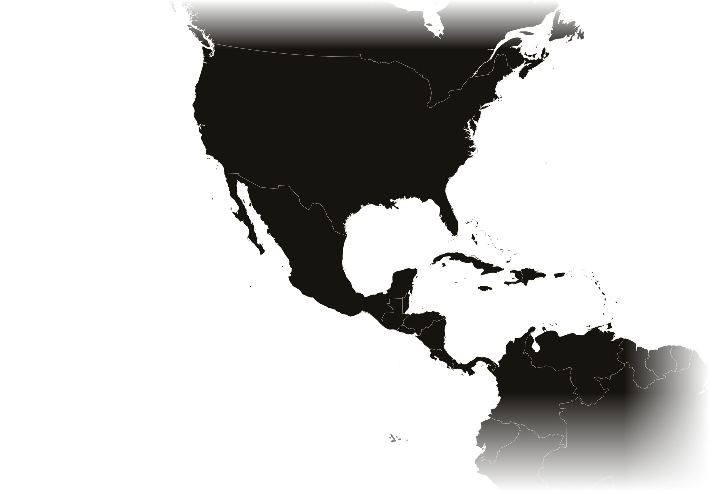
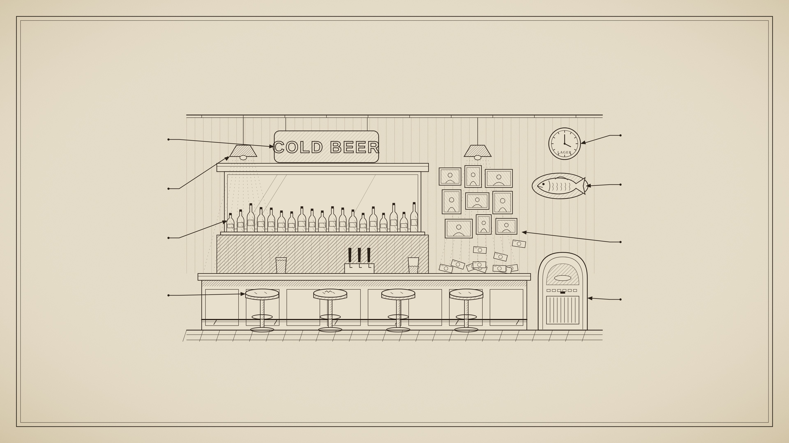
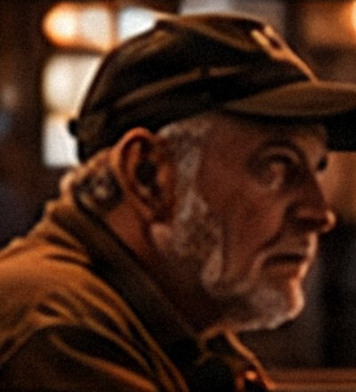
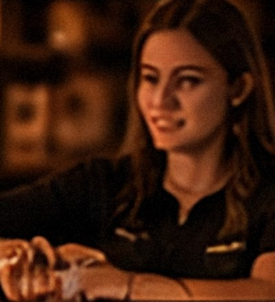
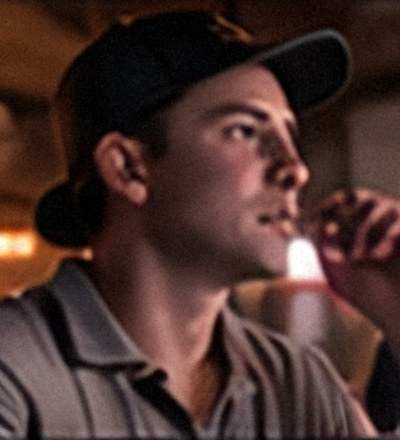
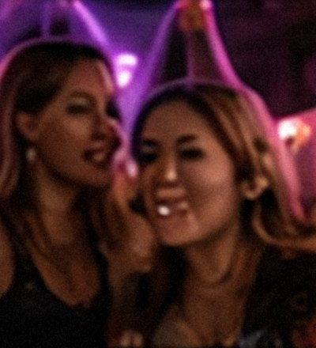

01
Part I · The Habitat
Across the American landscape, beneath flickering neon, an extraordinary ecosystem survives.
Roadside tavern · 9:47 PM · Field log 001
[0:00 to 0:25 · about 70 words]
Across the American landscape, hidden in strip malls, beneath flickering neon, and along roads less traveled, an extraordinary ecosystem continues to survive.
To the casual observer, it may appear inhospitable.
But look closer.
(pause)
This is the American dive bar.
Since 1999, which is to say the 1900s, I have conducted extensive field research into this habitat. Most of it at night. Much of it involving beer.
VISUAL NOTE: The title card before this slide already names the talk, so this opening shot works like a documentary's first scene. Change the time or field log number to match a real night if you like.

02
Range
Documented observations across the Americas
1999 – 2026
59 sites · survey ongoing
[0:26 to 0:55 · about 75 words]
These are my documented observations. Fifty-nine sites, from Vancouver to Guayaquil, and the survey continues.
A note on methodology. The federal government carefully counts "drinking places." It has no category for a dive. Diveus americanus remains, officially, unrecognized by science.
The word itself was never a compliment. By the late 1860s, American newspapers were calling a disreputable drinking den a "dive," possibly because so many of them sat a flight below the street.
TO DO: The dots mark 59 cities you named: Seattle, Vancouver, Portland, Ontario (placed at Toronto), Montreal, New York, Atlantic City, Las Vegas, Fort Lauderdale, Tampa, Marathon, Islamorada, Miami, Austin, Cincinnati, Cleveland, Detroit, Great Falls, Boise, Victor, Redondo Beach, San Francisco, Louisville, Beckley, Huntington, Denver, Colorado Springs, Madison, Mineral Point, Los Angeles, Mexico City, Mérida, Cancún, Guayaquil, Cabo San Lucas, Portland (Maine), Jackson (Montana), Dubuque, Pittsburgh, Nashville, Memphis, Wilmington (North Carolina), North Myrtle Beach, Tallahassee, Washington D.C., Boston, Providence, Philadelphia, Biloxi, Phoenix, Tucson, Tombstone, San Diego, Riverside, Tijuana, Rosarito, Ensenada, Portsmouth (Ohio) and Ashland (Kentucky). Each dot is its own shape, so add more as the survey continues.
SOURCES: U.S. Census Bureau NAICS code 722410, "Drinking Places (Alcoholic Beverages)," has no dive-bar subcategory. Earliest noun use of "dive" for a disreputable establishment, National Police Gazette, Jan. 12, 1867 (via Barry Popik). OED defines the U.S. sense as a drinking den "often situated in a cellar, basement, or other half-concealed place." The basement origin is likely, not certain, which is why the narration says "possibly."

Plate III
Diveus americanus
Anatomy of a Dive
Fig. 1.—Interior, lateral section. Engraved from life.
1. Neon vestigialis
Old neon
2. Lumen obscurum
Low ambient light
3. Reservoir lagerum
Domestic lager supply
4. Sedes territorialis
Territorial seating
5. Horologium cerevisiae
Brewery-issued clock
6. Artefactum inexplicatum
Unexplained artifact
7. Paries accumulatus
Accumulated décor
8. Machina musicalis
Jukebox
The Law of Accumulation
“The authenticity of a dive bar appears positively correlated with the number of objects whose origin the current bartender cannot explain.”
[0:55 to 1:59 · about 160 words]
Let us examine a specimen.
You don't need to read the labels. Every healthy dive shares the same few organs. Light low enough to forgive you. A stool that belongs to someone, even when they're not on it. Beer in exactly one temperature. A jukebox with opinions. And at least one object on the wall that nobody can explain.
Some of it was supplied. Before Prohibition, breweries financed, furnished and often owned the saloons that sold their beer. Reformers blamed these "tied houses" for the worst of the saloon. So after repeal, Congress made it illegal for a brewer to give a bar anything of value.
With one exception. Advertising.
A free clock is a bribe. A free clock with a beer's name on it is marketing. That is why so many dives tell time by the brewery.
But most of it simply arrived. Which brings us to the Law of Accumulation.
(read the law slowly)
A real dive is not decorated. It accumulates.
VISUAL NOTE: This plate is an original engraving-style illustration in the manner of a 19th-century anatomy atlas. The neon sign is drawn in ink and flickers on about ten seconds after you arrive. The arrows are part of the image. The labels are separate text boxes, so you can rename any part, but if you move one, its arrow stays put.
SOURCES: Pre-Prohibition tied houses received "bar fixtures," "branded backbars" and "brewery-branded mirrors and hardware" (Whiting-Robertsdale Historical Society, "The Tied House System That Left Its Mark on Whiting"). Federal Alcohol Administration Act of 1935, section 205(b) (27 U.S.C. 205): suppliers may not induce retailers with things of value (the "tied house" provision). Brewers Association, "Tied House Laws": temperance campaigners used "tied house" against brewer-controlled saloons, which helped bring Prohibition; federal rules bar suppliers from giving retailers cash, equipment or other goods, with exceptions for advertising materials. 27 CFR 6.102: outside signs must carry conspicuous advertising and cost no more than $400. 27 CFR 6.83: product displays are limited to $300 per brand at a time in one retail establishment. 27 CFR 6.84 lets industry members give retailers point-of-sale materials such as "inside signs," "back bar mats," "clocks, calendars" and menus, provided they carry conspicuous advertising. The Law of Accumulation and the Latin anatomy terms are our own invention, presented as such.
04
Ancestral species
The Lineage
The Jim Crow South
The Juke Joint
Diveus jukeus
Where the blues grew up, and where the jukebox got its name.
Cattle and oil towns of the Southwest
The Honky-Tonk
Diveus honkytonkus
First recorded in print in 1874. Its name has no known origin.
“The most important place in America.”
Zora Neale Hurston, on the juke joint’s place in American music
[1:59 to 3:09 · about 175 words]
Every species has ancestors. Two of them matter more than the rest.
(slow down here)
The juke joint. In the Jim Crow South, Black sharecroppers and laborers were barred from most white establishments. So they made their own. A shack at a crossroads. A back room in someone's house. Music, dancing, food, a little gambling, at the end of a long week in the fields.
Some historians call the juke joint the first private space Black Americans had in this country. A place to gather without being watched.
That is where the blues grew up. Robert Johnson, Son House and Charley Patton worked the juke joint circuit for tips and a free meal. Zora Neale Hurston called it the most important place in America, musically speaking. And when coin-operated record players spread into bars, they took its name. The jukebox.
(pause)
Out west, the cattle and oil towns produced the honky-tonk. The word was in print by 1874, and no one knows where it came from. Country music went electric partly so it could be heard over the noise.
TONE NOTE: Play the juke joint straight. This is the one moment in the talk where the history carries more weight than the joke.
SOURCES: Wikipedia, "Juke joint": juke joints were primarily operated by African Americans in the Southeast, at rural crossroads and town outskirts, often in abandoned buildings or private houses; sharecroppers and plantation workers were barred from most white establishments by Jim Crow laws; they offered music, dancing, drinking, food and gambling; they "may be considered the first 'private space' for black people in the United States"; Robert Johnson, Son House and Charley Patton "traveled the juke joint circuit, scraping out a living on tips and free meals"; "juke" is believed to come from the Gullah joog, meaning rowdy or disorderly. Mississippi Encyclopedia, "Juke Joints and Honky Tonks": juke joints as spaces where Black Americans could gather without white supervision under Jim Crow, and their tie to the blues; Hurston called the juke joint "the most important place in America" musically. Wikipedia, "Jukebox": the term came into use around 1940 from "juke joint," and manufacturers avoided it for years. Wikipedia, "Honky-tonk": earliest known print use June 28, 1874 (Peoria Journal), origin unknown; honky-tonks grew in oil boom and cattle towns of Texas, Oklahoma and Louisiana; electric instruments adopted early to cut through bar noise. The origin of "juke" itself is uncertain; competing theories exist.
05
01
The Neighborhood Dive
Diveus communalis
Activity
Primarily nocturnal
Diet
Domestic lager, fried foods
Status
Stable, locally vulnerable
[3:09 to 3:31 · about 55 words]
Our research has identified five living species.
We begin with the most widespread. The Neighborhood Dive. Diveus communalis.
Its defining trait is community. Regulars occupy preferred stools. The bartender begins pouring before anyone orders. Over time, the line between customer and staff grows unclear. Some regulars have been observed changing the music. Others, the keg.
PHOTO DIRECTION: A regular at the bar in profile, warm practical light, shallow depth of field, beer in frame. Ask permission, or shoot from behind so the subject is anonymous.
06
Field observation № 01
Jimmy’s Corner
140 West 44th Street, New York
Opened in 1971 by Jimmy Glenn, a Golden Gloves boxer turned trainer and cutman. The walls are his collection of fight posters and photographs.
[3:31 to 3:52 · about 50 words]
Field Observation Number One. Jimmy's Corner, a few steps from Times Square.
Jimmy Glenn opened it in 1971. He'd been a Golden Gloves boxer, then a trainer and a cutman, the person in the corner who stops the bleeding between rounds. The walls are his collection. Fight posters, photographs, a ring bell.
(let the footage play)
VIDEO: Your own point-of-view footage of Jimmy's Corner loops behind this slide, muted. In the web presentation it restarts each time you arrive on the slide.
SOURCES: Wikipedia, "Jimmy's Corner": opened 1971 by Jimmy Glenn at 140 West 44th Street; Glenn was a former Golden Gloves amateur who became a trainer and cutman, working with fighters including Floyd Patterson; the interior is lined with framed boxing photographs, fight posters and memorabilia he collected; Glenn died May 7, 2020, at 89; Adam Glenn has run the bar since 2015; the building's owner is seeking to evict the bar, and as of February 2026 a judge had temporarily halted the eviction while the case continues. The definition of a cutman is general knowledge, not from this source.
07
Field observation № 02
McSorley’s Old Ale House
New York, New York
Above the bar hang wishbones, said to have been left by soldiers heading to the First World War. The ones still hanging are said to belong to those who never came back.
1854
The year it claims. City records suggest a few years later.
1970
Women first served, after two lawyers sued and won.
1986
A ladies’ room is installed.
[3:52 to 4:26 · about 85 words]
Field Observation Number Two. McSorley's Old Ale House, New York.
It claims 1854. City records suggest a few years later.
For more than a century, it served men only, until two lawyers were refused service, sued, and won. Women walked in on August 10th, 1970. A ladies' room followed sixteen years later.
Above the bar hang wishbones, said to have been left by soldiers heading to the First World War. The ones still hanging are said to belong to those who never came back.
(let that sit for a beat)
PHOTO OPTION: If you've been, a phone photo of the wishbones or the sawdust floor would make a great full-bleed background here.
SOURCES: Wikipedia, "McSorley's Old Ale House": claimed founding 1854, evidence second-hand; the site appears vacant 1860 to 1861 and city records date the building no earlier than 1858; women first admitted August 10, 1970 after Seidenberg v. McSorley's Old Ale House (S.D.N.Y. 1970), brought by NOW attorneys Faith Seidenberg and Karen DeCrow; ladies' room installed 1986; wishbones traditionally said to be hung by men leaving for World War I, a story the page notes is disputed (Joseph Mitchell suggested the founder simply saved them).
08
02
The Working-Class Dive
Diveus laboriosus
Habitat
Industrial towns, older districts
Peak activity
Shift change
Behavior
Same people, same stools, same drinks
Related species, briefly glimpsed
The Sports Dive · The VFW Post · The Bowling-Alley Bar · The College Dive · The Music Dive
[4:26 to 4:53 · about 65 words]
In older industrial towns, we find a hardier relative. The Working-Class Dive. Diveus laboriosus.
Its defining trait is routine. Activity peaks at shift change. Same people. Same stools. Same drinks. Same time.
Researchers have observed individual specimens occupying the same stool for decades. Removing the stool could result in severe ecological disruption.
Related species are glimpsed only briefly. The Sports Dive. The VFW post. The bowling-alley bar.
PHOTO DIRECTION: An older regular at a quiet bar in daylight or late afternoon, window light, domestic bottle in frame. Industrial-town feel. Or the empty stool itself, with a worn seat.
09
03
The Destination Dive
Diveus remotus
Habitat
Coasts, back roads, deserts, mountains
Behavior
Draws intentional travel
Adaptations
Cash only. A resident dog. One inexplicably excellent sandwich.
[4:53 to 5:12 · about 45 words]
Some populations have evolved in remarkable geographic isolation. The Destination Dive. Diveus remotus.
Found on coastlines, back roads, and at the ends of things.
Isolation produces strange local adaptations. Cash only. A resident dog. One inexplicably excellent sandwich.
And, in many cases, a ceiling covered in money.
PHOTO DIRECTION: A coastal, rural, desert or mountain bar shot wide enough to show its isolation. Golden hour or sunset. If you have three, consider swapping in a strip of three smaller photos labeled Coastal variant, Rural variant, Mountain or desert variant. Edit the Adaptations line to match a real one you've seen.
10
Field observation № 03
The Currency Ceiling
Origin disputed. Competing hypotheses include
I.
The miner’s insurance policy
III.
The aviator’s short snorter
$13,961
pulled from the walls of Siesta Key Oyster Bar in Sarasota, Florida, and sent to Hurricane Dorian relief in the Bahamas, 2019.
[5:12 to 5:57 · about 115 words]
Why money? Scientists remain divided.
In California's Gold Country, regulars tell of miners who signed a bill and tacked it to the ceiling, so they would never come back too broke for a first drink. On the Florida coast, the story involves fishermen, betting a dollar on the day's catch. Aviators had a cousin of the custom. Signed bills called short snorters. Fail to produce yours, and you bought the round.
The true origin may be unrecoverable.
The money is not. In 2019, staff at the Siesta Key Oyster Bar pulled every bill off the walls. Thirteen thousand, nine hundred and sixty-one dollars. All of it sent to hurricane relief in the Bahamas.
PHOTO DIRECTION: [INSERT PERSONAL FIELD PHOTO] if you have a dollar-bill bar of your own. Shoot straight up at the ceiling, or across the bar with the bills filling the top of the frame. If you swap in your own bar, rename the observation but keep the Siesta Key figure as the cited example.
SOURCES: Miner story, KQED, "150 Years of Slinging Drinks: A Visit to the Iron Door Saloon" (2016), told by a regular, unverified. Fisherman story, NBC News, "Thousands of dollar bills on Florida bar's walls and ceiling donated to Dorian relief" (2019); the general manager says she doesn't know how true it is. Short snorter, Wikipedia, "Short snorter": signed banknotes believed to date to Alaskan bush pilots in 1925, widespread in WWII; a holder who couldn't produce one owed each signer a drink. This is a related signed-currency custom, not a proven origin of bar ceilings. $13,961 to the Bahamas Red Cross, NBC News and CBS Miami, Sept./Oct. 2019. Other verified examples: Forbidden Island tiki bar, Alameda, CA, removed $10,367 in 2019 and donated over $8,000 to local charities (Boing Boing / CBC); Hott Leggz, Fort Lauderdale, gave about $10,000 to laid-off staff in 2020 (Global News).
11
04
The Biker Bar
Diveus motorcyclus
Habitat
Highway shoulders, county lines
Identification
A precise row of motorcycles out front
Field rule
Admire the bikes. Never touch the bikes.
[5:57 to 6:21 · about 60 words]
Some species are best observed from a respectful distance.
The Biker Bar. Diveus motorcyclus.
It is easily identified by the precise row of motorcycles out front. Despite its reputation, it is among the most courteous habitats on the continent. Strangers are welcomed. Regulars look out for one another.
Researchers are advised to admire the bikes. Never touch the bikes.
AUDIO: In the web presentation, your own biker bar field recording starts on this slide and carries through the late-night slides.
PHOTO DIRECTION: [INSERT PERSONAL FIELD PHOTO]. The bar you recorded, ideally with the row of bikes out front at golden hour.
12
05
The Late-Night Dive
Diveus nocturnus
Defining trait Migration · Peak activity 00:00 – 02:00
Restaurants
Concerts
Weddings
Other bars, closed
Hospitality workers
Dive Bar
1:17 AM
Behavioral note · “Happy hour” began aboard the USS Arkansas in 1913 · Illegal in Massachusetts since 1984
[6:21 to 7:01 · about 100 words]
Our final species is rarely seen in daylight. The Late-Night Dive. Diveus nocturnus.
As midnight approaches, scattered populations begin their nightly migration toward a common watering hole. Restaurant staff, finished with their shifts. Concertgoers. Wedding guests. Patrons of lesser bars that have already closed.
By 1:17 a.m., they converge. Here, together, they will make increasingly questionable decisions.
The migration has an earlier phase. Happy hour. The term began among sailors aboard the USS Arkansas in 1913, and caught on during Prohibition as a drink before dinner at the speakeasy. In Massachusetts, it has been illegal since 1984.
Boston simply has hours.
HAPPY HOUR SOURCES: Wikipedia, "Happy hour": by June 1913 the crew of USS Arkansas called regular onboard gatherings "happy hours"; the pre-dinner drink custom has roots in Prohibition-era speakeasies. Mondaq, "Are You Happy Now? The Status of Massachusetts Happy Hour Laws" (2019): Massachusetts became the first state to ban happy hours in 1984 (204 CMR 4), after a 1983 drunk-driving death. GBH News (June 10, 2026): the ban is still in place; Gov. Healey has said she would support removing it. The ban is statewide, not only Boston.
VISUAL NOTE: The map is an abstract city, not a real one. If you want it to be your city, a dark-mode screenshot of a real street map works as a replacement. The labels are separate text boxes, so you can move them.
13
Fauna of the American Dive

The Regular
Homo regularis
Territorial. Same stool, same drink.

The Bartender
Minister potus
Apex species. Controls access to resources.

The Tourist
Homo peregrinus
Identified by looking around too much.

The Bachelorette Party
Homo celebrans
Highly vocal. Travels in packs.
[7:01 to 7:22 · about 50 words]
Every habitat supports its fauna.
The Regular. Homo regularis. Territorial.
The Bartender. Minister potus. The apex species, controlling access to all resources.
The Tourist. Easily identified by looking around too much.
And occasionally, a highly vocal migratory population enters the habitat. Homo celebrans. Native species typically retreat until the disturbance has passed.
PHOTO DIRECTION: Four tight portraits, one per type, in matching warm low light. Real people need their permission. Silhouettes, hands on a bar, or a back-of-head shot also work and keep everyone anonymous. Current images are low-resolution stand-ins from your mockup.
14
Regional behavior
Local Adaptations
Chicago
The Tied House
Diveus domesticus
A saloon on the ground floor. The family who ran it lived upstairs.
Local ritual: a shot of Malört with an Old Style.
Wisconsin
Shake of the Day
Diveus aleator
Five dice in a leather cup. Beat the bartender and your drink is free.
In 2016, three Milwaukee bars banned the dice. The ban lasted two days.
Miami
Jimbo’s Place
Diveus honestus
A shrimper’s bait shack on Virginia Key, 1954 to 2012.
The honor system: money through the slot, beer from the cooler.
[7:22 to 8:22 · about 150 words]
Every population adapts to its environment.
In Chicago, remember the tied houses? Between 1897 and 1905, Schlitz alone built fifty-seven saloons here. Beer on the ground floor, apartments upstairs, often the family who ran the place. Many still stand. Look for the brewery's belted globe on the brick. The local ritual is the Chicago Handshake. A shot of Malört, which tastes like a punishment, and an Old Style to recover.
In Wisconsin, the dice cup lives on the bar. Shake of the Day: beat the bartender, and the next one's free. When three Milwaukee bars tried to ban the dice in 2016, the ban lasted two days.
And in Miami, on Virginia Key, there was Jimbo's. A shrimper's bait shack from 1954 until 2012. When I was there, you paid through a slot in a lockbox and pulled your own beer from the cooler.
That's not a business model. That's trust.
PHOTO DIRECTION: No photos needed. If you have your own shot of Jimbo's, a Chicago corner tavern with apartments above, or a dice cup on a Wisconsin bar, any one of them could replace a card.
FOLKLORE FLAG: The Jimbo's honor-system lockbox is your own eyewitness memory. None of the news coverage I found describes how payment worked, so it is told as your field note, not as a sourced fact. "Tastes like a punishment" is your opinion, offered as such.
SOURCES: Chicago Commission on Chicago Landmarks, "Five Brewery Tied Houses and One Brewery Stable" and "1393 W. Lake St. Schlitz Brewery Tied House" (2021): brewery ownership of Chicago saloons began in 1892; Schlitz built 57 tied houses in the city from 1897 to 1905; buildings followed a "store and flat" form with apartments above; upper-floor apartments "often housed the saloonkeeper and his family"; the belted-globe emblem derives from Richard Bock's Schlitz display at the 1893 World's Columbian Exposition; over forty brewery tied houses survive. WBEZ Curious City, "Why is Malört popular in Chicago?" (July 6, 2023): Carl Jeppson sold Swedish-style bitters in the 1920s marketed as a tonic; the Chicago Handshake is "the iconic pairing of a Malört shot with an Old Style beer," common at dive bars. Malört.com brand history: production returned to Chicago in 2019 under CH Distillery. Punch, "How Bar Dice Became a Wisconsin Institution" (2018): Shake of the Day is played against the bartender for the drink being ordered or a growing pot; bar historian Jim Draeger dates the game's popularity to at least the end of Prohibition. OnMilwaukee (Jan. 29, 2016): three bars' management discontinued bar dice on a Monday and reversed the ban by Wednesday. NBC Miami (March 15, 2012) and CBS Miami (March 20, 2012): James "Jimbo" Luznar opened Jimbo's on Virginia Key in 1954; the city closed it in March 2012. The Latin names are our invention.
15
The genus beyond the border
Related Populations
Mexico
The Pulquería
Diveus pulquerius
Serves pulque, the fermented agave drink the Aztecs held sacred.
Mexico City once counted about 1,100. By 2000, about 80 remained.
Brazil
The Boteco
Diveus botequinus
Born in the warehouses of Rio’s port in the 1800s.
Each year, botecos in 25 cities compete on their snacks and on how cold the beer is.
Ireland
The Spirit Grocer
Diveus mercator
A pub that was also the grocery, the hardware store and, now and then, the undertaker.
Some still are.
[8:22 to 8:58 · about 90 words]
The genus does not stop at the border.
In Mexico, the pulquería serves pulque, fermented agave sap the Aztecs considered sacred. Mexico City once counted around eleven hundred. After decades of campaigns by brewers to paint pulque as a poor man's drink, about eighty remained by 2000. [Optional: a nod to your teammates in Mexico.]
In Brazil, the boteco began in the warehouses of Rio's port. Today botecos in 25 cities compete every year over the best snack, and the coldest beer. [Optional: a nod to your teammates in Brazil.]
And in Ireland, the pub was often also the grocery, the hardware store, and occasionally the undertaker.
SOURCES: Punch, "A Pulque Revolution Brews in Mexico City": pulque's Aztec ritual role; pulquerías "once estimated at 1,100" (the estimate is undated), about 80 by the start of the 21st century; decline tied to a campaign by beer companies and the government. Rio de Janeiro by Cariocas: botecos began in 19th-century Rio with Portuguese port warehouses; Comida di Buteco, created in 1999 in Belo Horizonte, now has botecos in 25 cities competing, judged on snack, service, hygiene and drink temperature. Wikipedia, "Irish pub": 19th-century spirit grocers combined pubs with grocery or hardware businesses; some publicans were also undertakers, a combination "still common in Ireland." "Diveus mercator" is our invention.
16
The third place
Home is the first place. Work is the second.The third is where a neighborhood meets itself.
48%
of Americans with a regular neighborhood spot, where they recognize people, talk with someone they don’t know well at least monthly
28%
of Americans with no regular place in their community
Survey Center on American Life, American Community Life Survey, June–July 2020, n = 5,058
[8:58 to 9:32 · about 85 words]
The sociologist Ray Oldenburg had a name for places like this. Third places. Home is the first place. Work is the second. The third is where community happens, informally.
In a national survey, Americans with a regular neighborhood spot, where they recognize people, were far more likely to talk with someone they don't know well. Forty-eight percent.
(click) Versus twenty-eight percent of people with no regular place at all.
So the Regular isn't merely drinking a High Life at 4:30 on a Tuesday. He's maintaining social infrastructure.
BUILD: The 28% fades in on click.
SOURCES: Daniel A. Cox, Ryan Streeter, Samuel J. Abrams, Beatrice Lee and Dana Popky, "Public Places and Commercial Spaces: How Neighborhood Amenities Foster Trust and Connection in American Communities," Survey Center on American Life (AEI), Oct. 20, 2021. Survey fielded June 11 to July 1, 2020, n = 5,058, NORC AmeriSpeak panel. Exact measure: talking with someone they don't know well at least once or twice a month. 48% among those with a regular spot where they generally recognize people, 28% among those with no regular place (30% among those with a spot but who don't recognize people). Caveat: "regular spot" includes coffee shops, restaurants, bars and other places, not bars alone. In the same survey, 29% of those with a regular spot named a restaurant or bar. "Third place" comes from Ray Oldenburg, The Great Good Place (1989).
17
Diveus artificialis
The False Dive
Not a true species. A mimic.
Edison bulbs
Commissioned mural
Custom neon
Deliberately distressed finish
$17 cocktail
QR-code menu
Social media manager
[9:32 to 9:55 · about 60 words]
Not every specimen is what it appears to be.
Diveus artificialis. The False Dive.
Through a remarkable process known as hospitality-group development, the False Dive has evolved, or rather, been designed, to resemble its wild cousin. Edison bulbs. A commissioned mural. Custom neon. A seventeen-dollar cocktail.
Attempts to reproduce the American dive bar in captivity have largely failed.
PHOTO DIRECTION: The most suspiciously perfect "dive" you can find. Edison bulbs, a coupe glass, subway tile, merch for sale by the door. Shoot it beautifully. The joke lands better if it looks good. Avoid showing a recognizable venue's name or logo.
18
Did this accumulate?
or was it purchased?
[9:55 to 9:58 · about 10 words]
Fortunately, field researchers rely on one simple diagnostic.
(Let the slide sit for three full seconds. Say nothing. Let the audience read it.)
19
Observing without disturbing
Field Protocol
01
Four people or fewer. A larger party disrupts the habitat.
02
A beer, a shot, or two ingredients. Never a fancy drink.
03
Read the room before the jukebox. Never try to change the vibe.
04
Note how seriously they play pool. Mimic accordingly.
05
The restroom is for number one. Number two means it’s time to go home.
06
Bring cash. If they don’t take plastic, be delighted. They are trying to survive.
[9:58 to 10:42 · about 110 words]
If you go out to observe one yourself, a few protocols.
One. Four people or fewer. A larger party disrupts the habitat.
Two. Order a beer, a shot, or a drink with two ingredients at most. Never a fancy drink.
Three. Notice the vibe before you go near the jukebox. You are there to observe the vibe, not to change it.
Four. Watch how seriously the pool players are taking it. Then mimic accordingly.
Five. The restroom is for number one only. Number two means it's time to go home.
(beat)
And six. Always bring cash. When they tell you they don't take cards, be delighted.
They are trying to survive.
VISUAL NOTE: These are your own field rules, presented as the researcher's opinion. Nothing here needs a source.
20
Conservation
No one has ever counted America’s dive bars. The pressures on neighborhood gathering places are easier to name.
Rising rents
Redevelopment
Aging owners
Changing drinking habits
You can open a bar tomorrow.You cannot open a seventy-year-old bar tomorrow.
[10:42 to 11:25 · about 110 words]
A word on conservation.
No one can tell you how many dive bars remain. No one has ever counted them. But the pressures on neighborhood gathering places are real. Rising rents. Redevelopment. Owners nearing retirement. And fewer drinkers. In 2025, Gallup found just 54 percent of American adults drink at all, the lowest in its records.
You can open a bar tomorrow. You cannot open a seventy-year-old bar tomorrow.
The scratches. The regulars. The bartender who's been there since the eighties. The photographs nobody can identify. Those take time.
As of this year, Jimmy's Corner is in court, fighting eviction from the building it has occupied since 1971.
PHOTO DIRECTION: An old neighborhood dive with real age on it. Faded paint, an old brewery sign or neon, ideally at dusk. Your own photo of a bar that has since closed would land hardest here.
SOURCES: Gallup, 2025 Consumption Habits survey, 54% of U.S. adults say they drink alcohol, one point below the previous low (1958) in a trend dating to 1939 (reported by NPR via Michigan Public, Aug. 13, 2025). Survey Center on American Life, "Disconnected: The Growing Class Divide in American Civic Life" (Aug. 2024, n = 6,597): about 21% of Americans report no access to any of ten kinds of community gathering places. No federal source tracks dive bar openings or closures; the slide makes no closure claim for that reason. The rents, redevelopment and aging-owner pressures are offered as commonly cited pressures, not measured rates.
21
Diveus americanus
Conservation status Threatened
Respect the habitat.
Don’t sit in Gary’s seat.
[11:25 to 11:41 · about 40 words]
A great dive bar isn't designed. It evolves.
So should you encounter one of these remarkable establishments in the wild, approach respectfully. Observe the local customs. Order something simple.
And whatever you do...
(click: the screen goes black)
Respect the habitat. Don't sit in Gary's seat.
(End. Don't say thank you until they stop laughing.)
BUILD: The black end card fades in on click, over the photo. "Threatened" is a documentary conceit, not a real conservation designation.
PHOTO DIRECTION: The bookend to your opening shot. A lone bar at dusk, wide, lots of sky, sign lit. If you only have one great exterior, reuse the cover photo here. Returning to the opening image is a classic documentary move.